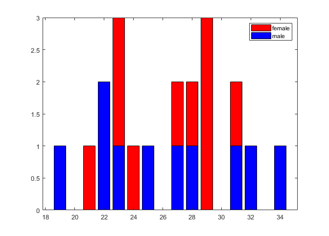

T = readtable("speech_quality_ratings.xlsx");
max_age = max(T.Age);
min_age = min(T.Age);
dim = max_age-min_age;
single_participants = unique(T(:,[1:3]));
male_ages = [];
female_ages = [];
for i = min_age: max_age
t_agei_m = single_participants(single_participants.Gender == "m" & single_participants.Age == i,:);
t_agei_f = single_participants(single_participants.Gender == "w" & single_participants.Age == i,:);
male_ages = [male_ages; repmat(i,height(t_agei_m),1)];
female_ages = [female_ages; repmat(i,height(t_agei_f),1)];
end
binrng = min_age:max_age;
counts1 = histc(male_ages, binrng);
counts2 = histc(female_ages, binrng);
counts3 = counts1 + counts2;
figure(1)
set(gcf, 'Units', 'Normalized', 'OuterPosition', [0, 0.04, 0.2, 0.4]);
bar(binrng, counts3, 'r')
hold on
bar(binrng, counts1, 'b')
hold off
legend('female', 'male')
